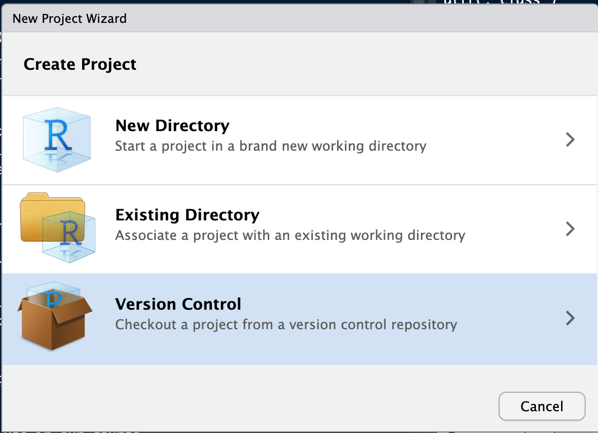
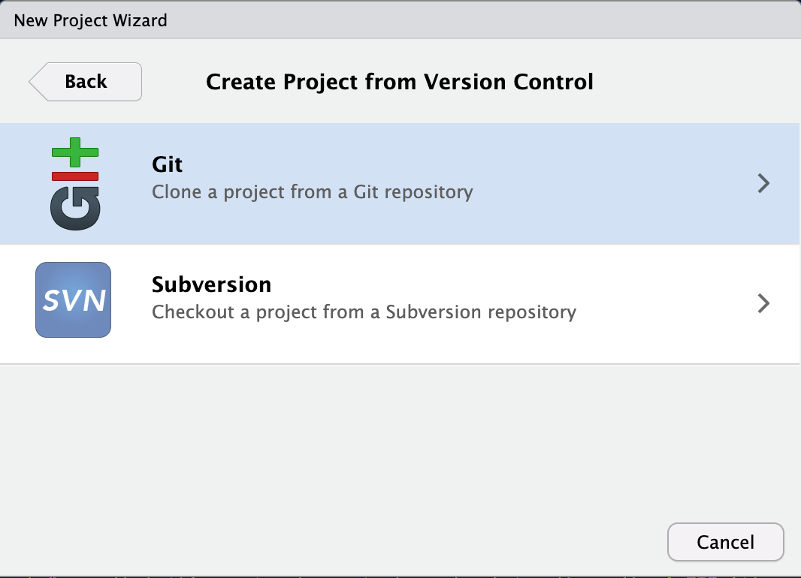
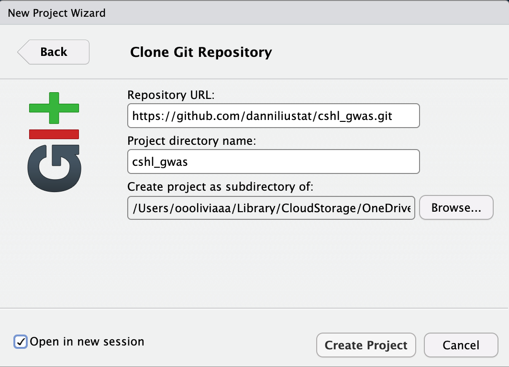
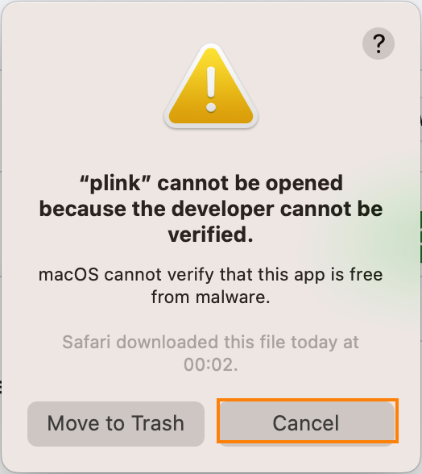
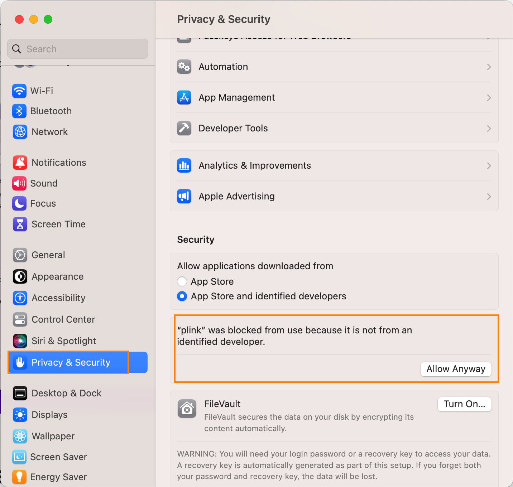

CSHL course - GWAS Hands-on Analysis
2025-06-09
Chapter 1 Welcome to the GWAS and eQTL Workshop
This repository is for CSHL Summer Course on GWAS analysis.
Speaker: Min Zhang, Danni Liu, University of California, Irvine
Before you start, please clone this whole repository to your personal laptop.
Click “File”-> “New Project”. Select “Version Control” -> “Git”. In the next window, “Repository URL” is the github URLhttps://github.com/danniliustat/cshl_gwas.gitwe will clone, “Project directory name” is “cshl_gwas”, “Create project as subdirectory of” should be where you want the project folder to save. I recommend using a top-level directory in your system, such as “Documents”, so that it’s easier to navigate and retrive the path. A ZIP file (likely with name “cshl_gwas”) will be saved to your laptop. Unzip the file to access all datasets and materials.
Fig1. Import and clone GitHub repository
| Step1 | Step2 | Step3 |
|---|---|---|
|  |  |  |
1.0.1 Overview
In this course, we will explore the fundamentals of Genome-Wide Association Study (GWAS) analysis using both toy example datasets and a subsetted dataset from a real-world case study. We will also introduce gene-set and eQTL analysis using a subsetted data. By the end of this course, we hope you will have a basic understanding of GWAS and related analysis pipeline and be able to carry out similar analysis using your own data.
The course is divided into chapters, starting with the initial overview of the tools and pipeline using toy or example datasets in CHapter 2-3. This section will give you a general idea of the different steps involved in GWAS analysis. The subsequent chapters will focus on the breast cancer case study from GEO. These chapters will provide a hands-on experience of analyzing real-world data.
1.0.2 Folder structure:
.Rmd: These are the course materials with instructions, codes and outputs in R Markdown files.
- We will begin with two chapters that provide an overview of the tools and pipeline, using toy or example datasets. These small datasets will allow you to grasp the different steps involved in GWAS analysis. Additionally, these toy examples will enable you to explore the data structure and manipulate the results easily, as they are small and can be easily opened.
- The remaining chapters will delve into a detailed case study on breast cancer, utilizing a dataset downloaded from the Gene Expression Omnibus (GEO). To facilitate running the analysis on a personal laptop, we have subsetted the genotype data to include only 1000 Single Nucleotide Polymorphisms (SNPs).
Data: This folder includes the necessary data files, including the toy example datasets, case study data, and the corresponding results. We will read data and write outputs to this folder.
Tools: This folder contains installation packages for other programs that we will use in our course.
You can ignore other folders as we won’t use them.
1.0.3 Programming Languages:
Throughout this course, we will primarily use the programming languages Bash and R. It is essential that you have a working knowledge of both languages before carrying out your own analysis. Please ensure that you have RStudio installed on your laptop to actively participate in the course.
Install R and RStudio:
You can download R and RStudio at https://posit.co/download/rstudio-desktop/. Choose the installation files that are suitable for your laptop system. You have to install R before installing RStudio.
After you launch RStudio, locate the bottom left panel which has two tabs “Console” and “Terminal”. We will mainly use these two tabs for our course. “Console” window is used to run R codes and “Terminal” window can access your system shell.
For macOS users, “Terminal” can run Bash commands directly. You will start by setting your working directory to the downloaded “cshl_gwas” folder by typing: cd /path/to/cshl_gwas (change this path to where you saved it) in the RStudio Terminal.
However, Windows users need to use another “Powershell” App to run Bash codes because the default system shell language for Windows is Windows Commands, which is different from Bash commands. Another recommended software is Cygwin which can be installed from their website. See notes below.
👉Special Notes to Windows Users:
Windows has two command-line shells, Windows Command shell and Windows Powershell. Windows Command shell is default for Windows system and can be run in “Command Prompt” App or in RStudio Terminal by default. But Windows commands are NOT the same as Bash commands! Powershell App is one place to run Bash commands for Windows users. To run bash codes in RStudio Terminal you need to make the following changes. Choose from the menu bar “Tools”-> “Global Options”-> under “Terminal” tab-> Change “new terminals open with” to “Windows Powershell”. You can test whether bash commands can be recognized by running simple commands such asls,headorpwd.
You can also run bash commands directly from Powershell. To open Powershell, search for “Powershell” App in Windows menu.(Don’t choose ‘Command Prompt’.) You can also find it by pressing “Windows+X” key and select “Terminal” in the menu appeared. You will need an extra step to set your working directory to the downloaded “cshl_gwas” folder by typing:cd /path/to/cshl_gwas(change this path to where you saved it). Another recommended app for running bash commands is Cygin, but you need to install it.
1.0.4 Required GWAS Tools
In GWAS analysis, we also use additional command-line tools to handle large scale datasets. The primary tools we use in this course are PLINK, IMPUTE2 and MAGMA. Participants need to install these tools on your own laptops before calling them.
Before you install, you need to check whether these tools are compatible to run on your laptop system. Usually, bioinformatics analyses are run on computational servers with Linux system given the large data volumn and high computational power required. So most bioinformatic programs are developed for Linux and only some of them are available to run on personal laptops. For the tools used in our course, PLINK and MAGMA is compatible with Windows, macOS, and Linux, while IMPUTE2 is only available for macOS and Linux users.
Installation instructions
You can find installation packages for PLINK, IMPUTE2 and MAGMA in your downloaded “cshl_gwas/Tools” folder. You need to locate the corresponding program ZIP files that are suitable for your laptop system then unzip it before use.
For macOS users: You can runall three softwares PLINK, IMPUTE2 and MAGMA. PLINK installation ZIP file can be found in “/cshl_gwas/Tools/PLINK/plink_mac_20231211.zip”. Unzip this file by double-click and a folder “plink_mac” will be created. The PLINK program file “plink” is within this folder. You can call PLINK program in RStudio Terminal by specifying the absolute path to this “plink” file:
/path/to/cshl_gwas/Tools/PLINK/plink_mac_20231211/plink. Similar for IMPUTE2 and MAGMA, you can unzip the installation ZIP file for macOS in “/cshl_gwas/Tools/”. IMPUTE2 program can be called with/path/to/cshl_gwas/Tools/IMPUTE2/impute_v2.3.2_MacOSX_Intel/impute2and MAGMA can be called with/path/to/cshl_gwas/Tools/MAGMA/magma_v1.10_mac/magma. An example of codes in RStudio Terminal is as below:cd /path/to/cshl_gwas ./Tools/PLINK/plink_mac_20231211/plink --help👉 macOS needs to authorize programs before use:
When you try to call PLINK, IMPUTE2 or MAGMA with the above commands, you might get a pop-up window with the following message“plink” cannot be opened because the developer cannot be verified.(Fig2) Select “Cancel” and we will authorize the software first.
Please go to macOS “System Settings”->“Privacy & Security”, and scroll down until you see a message"plink" was blocked from use because it is not from an identified developer.(Fig3) Click “Allow Anyway” and you will be prompt to enter your Mac username and password. Click “Unlock” and then “Allow Anyway” again, and the previous message will disappear.
Then try to run the same codes again in RStudio Terminal. You will get another pop-up window sayingmacOS cannot verify the developer of “plink”. Are you sure you want to open it?,(Fig4) select “Open” then you can see PLINK, IMPUTE2 or MAGMA commands options shown up in Terminal.
If you can’t find where to authorize the softwares in macOS Settings, you can runchmod 755in Terminal to authorize them. For example to authorize PLINK, runchmod 755 /path/to/cshl_gwas/Tools/PLINK/plink_mac_20231211/plink
| Fig2. Pop-up windows when you try to run program for the first time | Fig3. Authorize program in System Settings | Fig4. Second pop-up window when you run it again after authorization |
|---|---|---|
|  |  |
For Windows users: You can ONLY run PLINK and MAGMA program codes. PLINK installation file for Windows can be found in “/cshl_gwas/Tools/PLINK/plink_win64_20231211.zip”. Unzip “plink_win64_20231211.zip” with right click->“Extract All…” and a folder “plink_win64” will be created. (Double clicking the folder won’t unzip it. You have to extract it into an unzipped folder.) The PLINK program file “plink.exe” is within this folder. You can call PLINK program in RStudio Terminal by specifying the absolute path to this “plink.exe” file:
/path/to/cshl_gwas/Tools/PLINK/plink_win64_20231211/plink.exe. The MAGMA program is already unzipped and can be called directly with/path/to/cshl_gwas/Tools/MAGMA/magma_windows/magma.exe. An example of codes in RStudio Terminal is as below:cd /path/to/cshl_gwas ./Tools/PLINK/plink_win64_20231211/plink.exe --help